Să vină la mamografie?
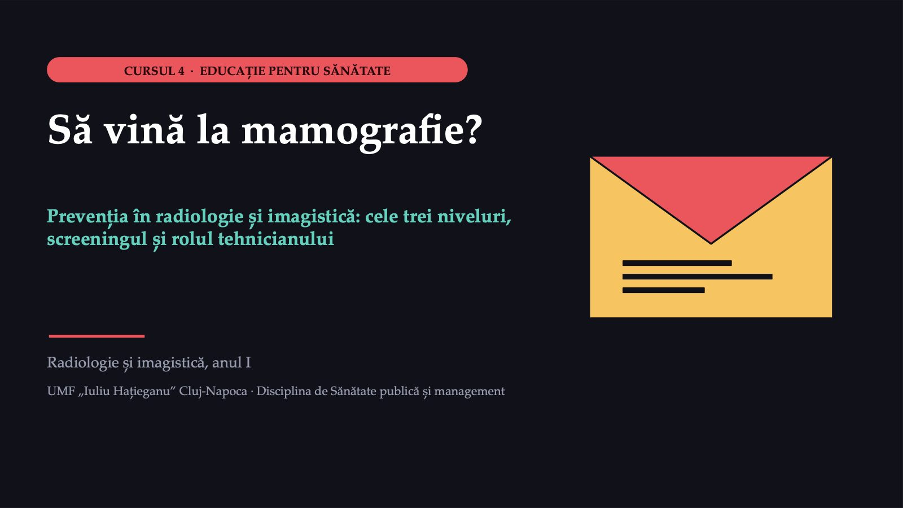
1 / 55O invitație, trei acte. Jumătate din timp lucrați voi
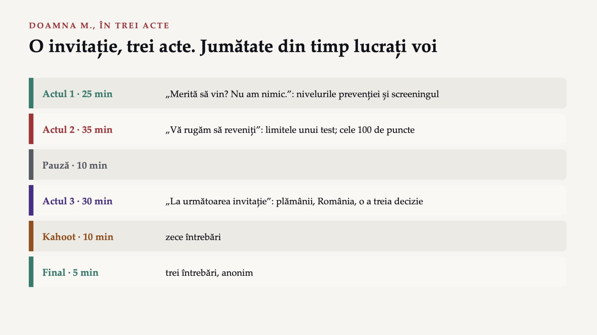
2 / 55Doamna M. și scrisoarea de invitație
![ACTUL 1 · CAZ CONSTRUIT PENTRU CURS; DETALIILE SUNT PLAUZIBILE, NU REALE Doamna M. și scrisoarea de invitație Doamna M., 52 de ani, vânzătoare, fără niciun simptom. Primește prin poștă invitația la o mamografie gratuită, în programul-pilot de screening din Județul B. SCRISOAREA (JUMĂTATE DE PAGINĂ) Data, ora, adresa. „Depistarea precoce salvează vieți.” „Nu am nimic, nu mă doare nimic. Am auzit că mamografia doare și că iradiază. O vecină a fost și apoi a umblat o lună pe la doctori pentru nimic. Merită să vin?” doamna M., la telefon, la programări](diapozitive/C04/003.jpg) 3 / 55
3 / 55Ce îi răspunde tehnicianul doamnei M.?
![VOT PE TELEFON ACTUL 1 · PRIMA DECIZIE Ce îi răspunde tehnicianul doamnei M.? A „Trebuie să veniți, programul este obligatoriu pentru femeile de vârsta dumneavoastră.” B „Vă explic pe scurt ce câștigați și ce riscați, inclusiv faptul că uneori se cer investigații suplimentare care se termină fără cancer; apoi hotărâți dumneavoastră. Dacă vreți, vă programez.” C „Nu aveți de ce să vă temeți: mamografia nu iradiază deloc și nu doare.” D „Dacă vă temeți de radiații, mai bine faceți-vă în fiecare an o ecografie sau un examen prin rezonanță magnetică (RMN), la privat.” Răspundeți pe telefon, la codul afișat.](diapozitive/C04/004.jpg) 4 / 55
4 / 55Convingeți-l pe cel care a votat altfel
 5 / 55
5 / 55Prevenția se face și în serviciul de imagistică
 6 / 55
6 / 55Prevenția bolii, după glosarul OMS din 2021
![A PREVENI: CE ÎNSEAMNĂ Prevenția bolii, după glosarul OMS din 2021 GLOSARUL PROMOVĂRII SĂNĂTĂȚII, OMS Măsurile care reduc apariția factorilor de risc, previn apariția bolii, îi opresc evoluția și îi reduc consecințele după ce s-a instalat. ÎNAINTE omul nu are încă boala: apariția ei se poate împiedica DUPĂ boala a început: se poate opri din drum sau i se pot micșora urmările Mamografia de screening caută perioada în care leziunea se vede pe o imagine, deși femeia nu simte nimic. Sursa: glosarul OMS al promovării sănătății, ediția 2021.](diapozitive/C04/007.jpg) 7 / 55
7 / 55Nivelurile prevenției
![TERMENUL NOU 1 DIN 3 Nivelurile prevenției DEFINIȚIE Treptele la care se poate interveni pe drumul unei boli: înainte să apară boala, cât boala este la început, după ce s-a instalat și, separat, pentru a feri pacientul de investigații și tratamente care nu îi folosesc. Primară înainte să apară boala Secundară boala la început, adesea fără simptome Terțiară după ce boala s-a instalat Cuaternară ferirea de ce nu folosește Definițiile clasice: dicționarul medicinei de familie WONCA (2003), reluat într-o sinteză din 2018.](diapozitive/C04/008.jpg) 8 / 55
8 / 55Primară și secundară, cu exemple din imagistică
![NIVELURILE PREVENȚIEI · 1 ȘI 2 Primară și secundară, cu exemple din imagistică Prevenția primară Se evită cauza problemei înainte ca ea să apară. Exemple: protecția radiologică (examen justificat, doză cât mai mică) și sfatul scurt de renunțare la fumat dat unui fumător la o radiografie pulmonară. Prevenția secundară Problema este depistată devreme, ca să poată fi vindecată sau efectele ei reduse. Screeningul este una dintre formele ei; mamografia de screening este exemplul cel mai cunoscut din imagistică.](diapozitive/C04/009.jpg) 9 / 55
9 / 55Terțiară și cuaternară, cu exemple din imagistică
![NIVELURILE PREVENȚIEI · 3 ȘI 4 Terțiară și cuaternară, cu exemple din imagistică Prevenția terțiară Se reduc efectele cronice ale problemei, inclusiv prin recuperare. Exemplu: examenele de urmărire cerute de medicul curant după tratament. Granița cu prevenția secundară nu e netă. Prevenția cuaternară Pacientul cu risc de supramedicalizare este ferit de intervenții noi. Exemplu: un examen repetat „ca să fim liniștiți” nu previne nimic, iradiază și poate găsi „ceva” care nu ar fi făcut rău. Propusă în 1986, intrată în dicționarul WONCA în 1999.](diapozitive/C04/010.jpg) 10 / 55
10 / 55Doamna M., pe cele patru trepte
 11 / 55
11 / 55Screeningul
![TERMENUL NOU 2 DIN 3 Screeningul DEFINIȚIA PE ÎNȚELESUL PACIENTULUI Testarea oamenilor care nu au niciun simptom, ca să se găsească devreme o boală. Testul nu pune diagnosticul: separă persoanele care probabil au boala de cele care probabil nu o au. RECOMANDAREA CONSILIULUI UE, 2022, CONSIDERENTUL (8) „Screeningul reprezintă procesul de testare pentru depistarea unor boli la persoane care nu manifestă niciun simptom” Cei cu rezultat pozitiv sau suspect sunt trimiși medicului pentru diagnostic și tratament (Wilson și Jungner, 1968).](diapozitive/C04/012.jpg) 12 / 55
12 / 55Diferența e esențială pentru voi
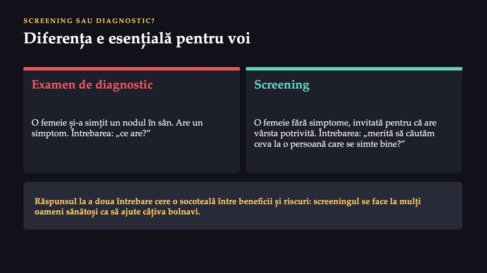
13 / 55Cine face invitația și cine urmărește rezultatul
 14 / 55
14 / 55Zece principii din 1968: patru dintre ele
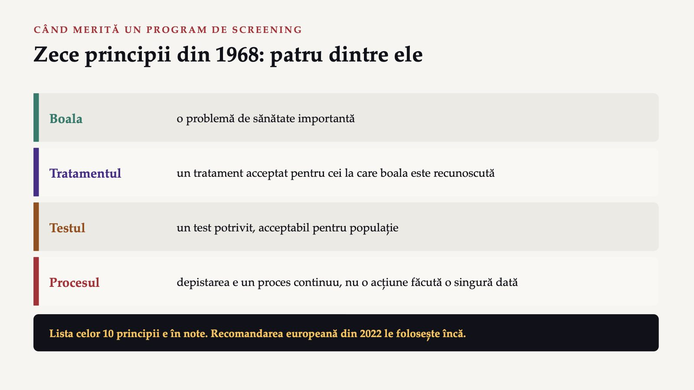
15 / 5541
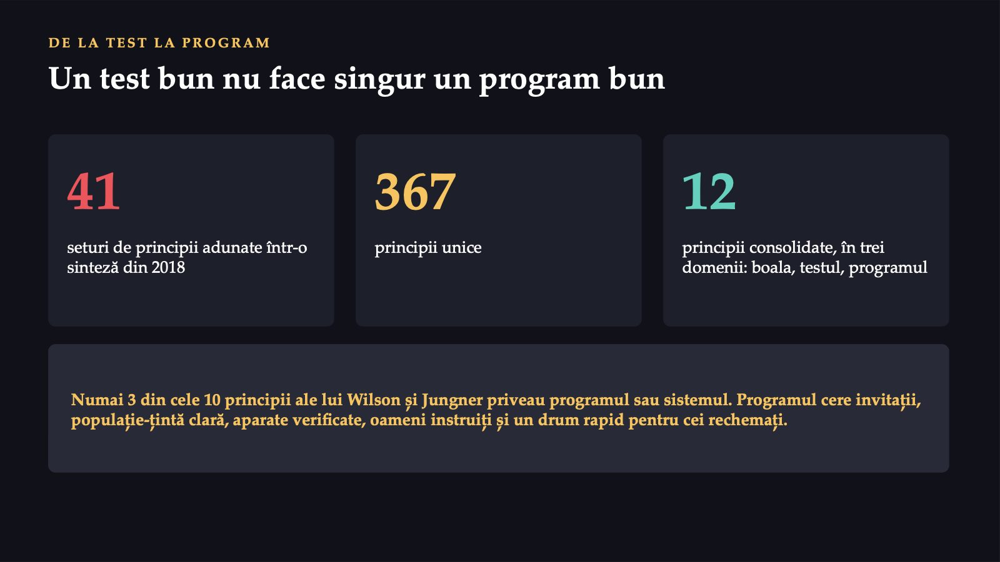
16 / 55Recomandată la 50–69 de ani, sugerată la 45–74
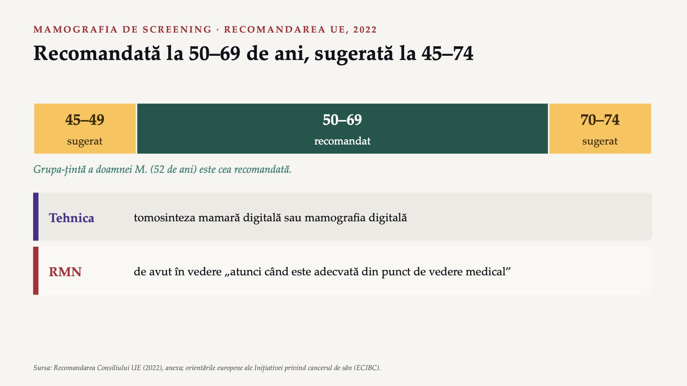
17 / 55Recomandarea UE dă vârstele; intervalul îl dau orientările
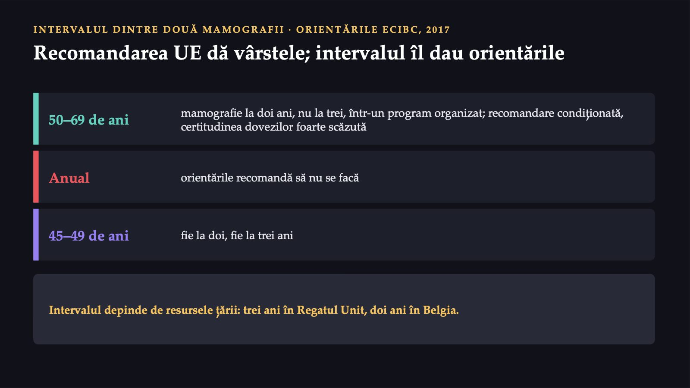
18 / 55Unde sistemul e slab, se începe altfel
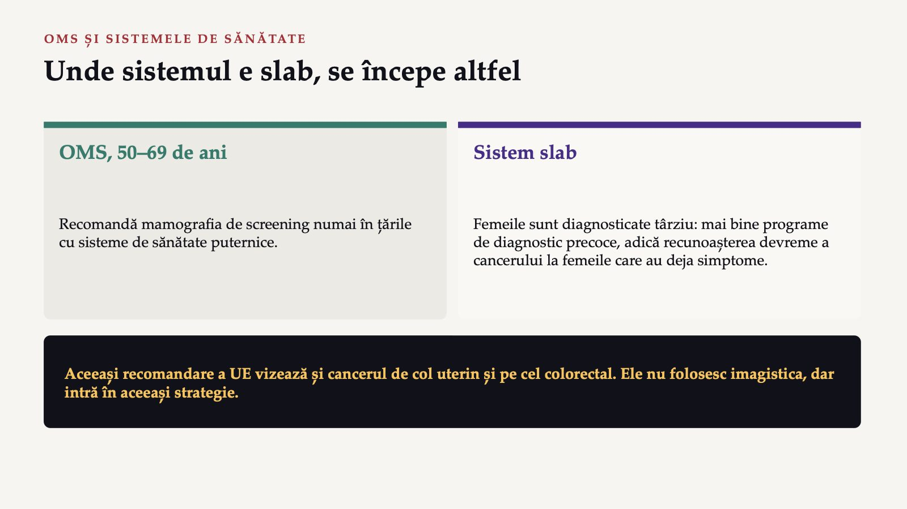
19 / 55(B) Explicația scurtă, apoi decide ea
![RĂSPUNSUL LA PRIMA DECIZIE (B) Explicația scurtă, apoi decide ea Recomandarea Consiliului UE: beneficiile și riscurile, inclusiv posibila supradiagnosticare, se prezintă pe înțelesul persoanei, ca ea să își dea consimțământul în cunoștință de cauză. (B) corectă: exact ce cere recomandarea europeană. Tehnicianul nu spune dacă „are” sau „nu are” ceva; pentru întrebările medicale o trimite la medicul ei de familie sau la medicul radiolog. (A) greșită: screeningul se oferă, nu se impune. O presiune poate aduce o femeie la o programare, dar o pierde la următoarea.](diapozitive/C04/020.jpg) 20 / 55
20 / 55De ce nu (C) și nu (D)
 21 / 55
21 / 55Doamna M. și scrisoarea a doua
![ACTUL 2 · CAZ CONSTRUIT PENTRU CURS Doamna M. și scrisoarea a doua Doamna M. a venit. Tehnicianul i-a explicat cum decurge examenul, a poziționat-o, a făcut incidențele standard și a verificat calitatea imaginilor. După două săptămâni primește o a doua scrisoare. Nu doarme două nopți. SCRISOAREA A DOUA „Rezultatul mamografiei necesită investigații suplimentare. Vă rugăm să vă prezentați la Centrul de imagistică A.” Nimic altceva. La rechemare, cu vocea tremurând, îl întreabă pe tehnician: „Deci am cancer?”](diapozitive/C04/022.jpg) 22 / 55
22 / 55„Deci am cancer?” Ce îi spune tehnicianul?
![VOT PE TELEFON ACTUL 2 · A DOUA DECIZIE „Deci am cancer?” Ce îi spune tehnicianul? A „Nu vă pot spune nimic, întrebați medicul.” și trece la poziționare B „Nu, sigur nu e nimic, așa ies multe imagini.” C „O rechemare nu înseamnă un diagnostic. Testul de screening doar arată că imaginea trebuie privită mai atent; diagnosticul îl pune medicul radiolog după aceste investigații. Vă spun acum ce facem și când aflați rezultatul.” D „Probabil a fost o eroare a aparatului, nu vă faceți griji.” Răspundeți pe telefon, la codul afișat.](diapozitive/C04/023.jpg) 23 / 55
23 / 55Convingeți-l pe cel care a votat altfel
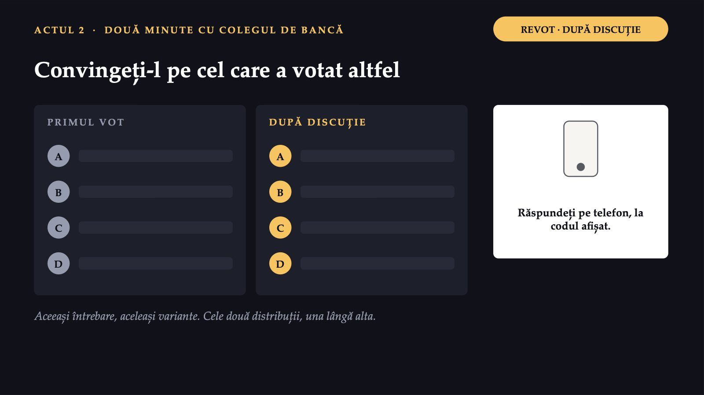
24 / 55Niciun test nu separă perfect bolnavii de sănătoși
![LIMITELE SCREENINGULUI Niciun test nu separă perfect bolnavii de sănătoși Rezultat fals pozitiv Rezultatul anormal al unei persoane care nu are boala, ca la doamna M.: rechemare, investigații suplimentare, nopți de neliniște. Poate duce la investigații inutile, anxietate și presiune pe serviciile de diagnostic. Rezultat fals negativ Rezultatul normal al unei persoane care are boala: o asigurare falsă și un diagnostic mai târziu. Dacă apare un simptom între două mamografii, merge la medic fără să aștepte invitația. Fiecare rechemare ocupă un loc la ecografie, la incidențele suplimentare sau la biopsie.](diapozitive/C04/025.jpg) 25 / 55
25 / 55Supradiagnosticul
 26 / 55
26 / 554
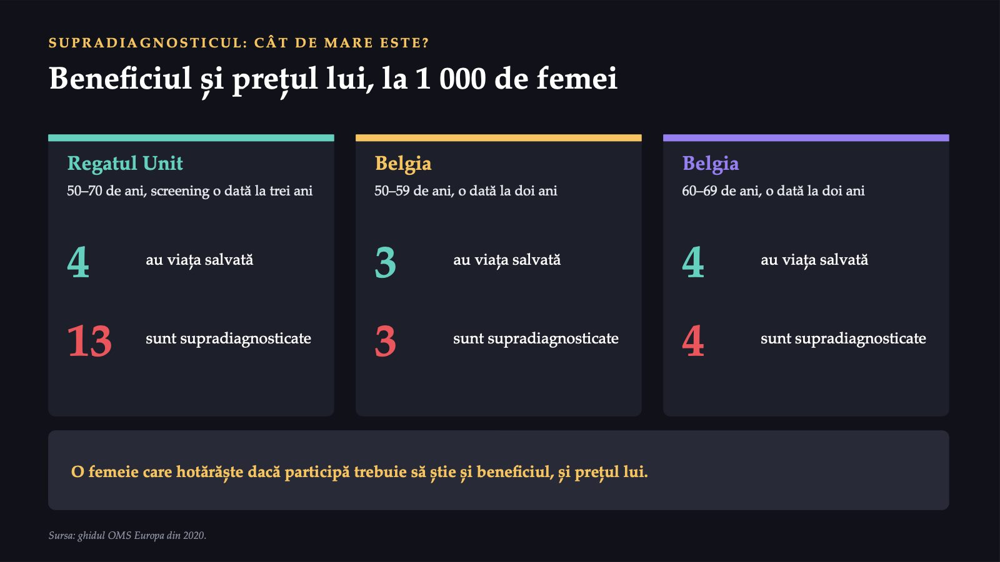
27 / 55Mai multe cancere găsite înseamnă mai multe vieți salvate?
![AFIRMAȚIE DE VERIFICAT Mai multe cancere găsite înseamnă mai multe vieți salvate? „Dacă un screening găsește mai multe cancere, înseamnă că salvează mai multe vieți.” Ce arată datele un screening care găsește mai multe cancere poate găsi, printre ele, și cancere care nu ar fi făcut rău. În exemplul din Regatul Unit, supradiagnosticatele sunt mai multe decât femeile cu viața salvată. Principiul un program se judecă după scăderea mortalității prin boala căutată și după prejudiciile pe care le aduce, nu după câte cazuri găsește.](diapozitive/C04/028.jpg) 28 / 55
28 / 55Primul principiu: fiecare expunere se justifică
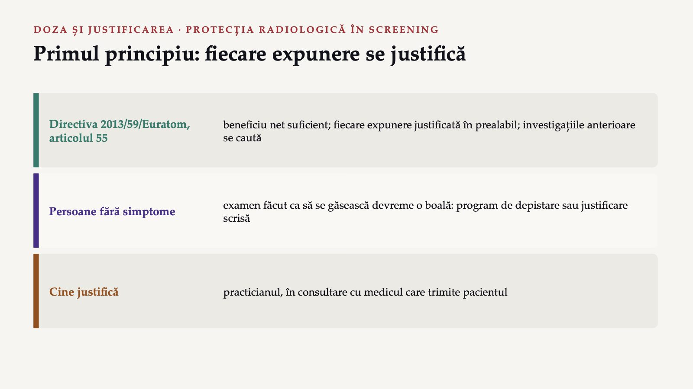
29 / 55Al doilea principiu: doza cea mai mică posibilă
![DOZA ȘI OPTIMIZAREA Al doilea principiu: doza cea mai mică posibilă Articolul 56 Dozele se mențin la nivelurile cele mai scăzute posibil pentru informația medicală necesară. Articolul 57 Îi implică în optimizare și pe cei care se ocupă de aspectele practice ale procedurilor. Aici intrați voi Poziționarea, compresia, parametrii după protocol, verificarea imaginii. O imagine refăcută înseamnă o doză în plus și, uneori, o rechemare inutilă. Justificarea și optimizarea sunt prevenție primară și cuaternară.](diapozitive/C04/030.jpg) 30 / 55
30 / 55Patru lucruri ale voastre, într-un program de screening
![ROLUL TEHNICIANULUI ȘI AL ASISTENTULUI Patru lucruri ale voastre, într-un program de screening Calitatea imaginii Poziționarea, compresia, parametrii, verificarea imaginii. Doza Protocolul scris, controlul aparatului, raportarea defectelor. Comunicarea Ce urmează, cât durează, când vine rezultatul. „Explică înapoi”. Consimțământul Persoana vine pentru că a fost invitată, nu pentru că este obligată. Competența se oprește la diagnostic: puteți spune ce înseamnă o rechemare în general, ce urmează și cine comunică rezultatul. Nu „nu e nimic”, nici „e grav”.](diapozitive/C04/031.jpg) 31 / 55
31 / 55Bugetul programului din Județul B
![INSTRUMENTUL ȘEDINȚEI · CAZ CONSTRUIT PENTRU CURS Bugetul programului din Județul B După primul an, coordonatorii programului-pilot văd trei probleme. Pentru anul următor primesc un buget suplimentar și trebuie să-l împartă. Participarea este mică Rechemările sunt multe: femei trimise la investigații suplimentare Așteptarea o femeie rechemată așteaptă câteva săptămâni până la evaluare Tot atunci, medicii pneumologi din județ cer bani pentru un program-pilot de examen CT cu doză mică la fumătorii și foștii fumători care au fumat intens.](diapozitive/C04/032.jpg) 32 / 55
32 / 55Împărțiți 100 de puncte între patru opțiuni
![100 DE PUNCTE · PE TELEFON ACTUL 2 · INSTRUMENTUL ȘEDINȚEI Împărțiți 100 de puncte între patru opțiuni A Invitațiile și unitatea mobilă, pentru a crește participarea B Calitatea: instruirea tehnicienilor, controlul aparatelor și a doua citire a imaginilor, pentru a scădea rechemările inutile C Evaluarea rapidă a femeilor rechemate, pentru a scurta așteptarea D Programul-pilot de examen CT cu doză mică pentru fumătorii și foștii fumători care au fumat intens Împărțiți cele 100 de puncte pe telefon, la codul afișat.](diapozitive/C04/033.jpg) 33 / 55
33 / 55Alocarea medie, profilul cel mai apropiat, urmările lui
 34 / 55
34 / 55Trei alocări și urmările lor
![CELE 100 DE PUNCTE · TREI PROFILURI VALORI IPOTETICE Trei alocări și urmările lor Profilul (A / B / C / D, în puncte) · Femei examinate din 10 000 invitate · Femei rechemate · Zile de așteptare · Persoane în programul-pilot de examen CT „Cât mai multe femei examinate” (60 / 10 / 20 / 10) · 5 400 · 378 · 20 · 200 „Împărțit aproape egal” (25 / 25 / 30 / 20) · 4 000 · 220 · 15 · 400 „Calitatea și rapiditatea întâi” (30 / 40 / 30 / 0) · 4 200 · 168 · 15 · 0 Valori ipotetice, calculate pe un model construit pentru curs.](diapozitive/C04/035.jpg) 35 / 55
35 / 55Cum s-au calculat urmările
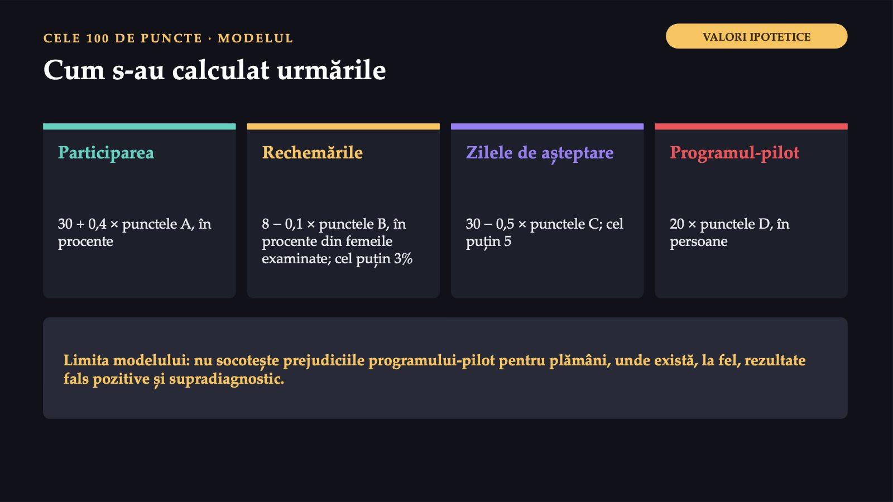
36 / 55Ce ați sacrificat fără să vă dați seama
 37 / 55
37 / 55Zece minute
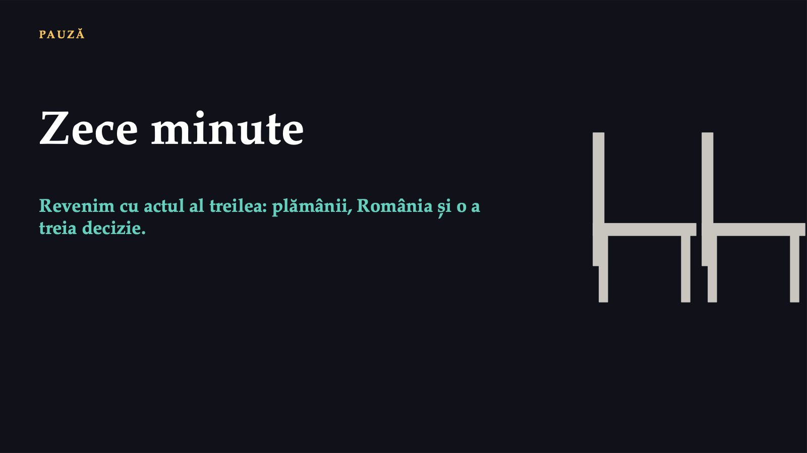
38 / 55(A) și (B): de ce nu
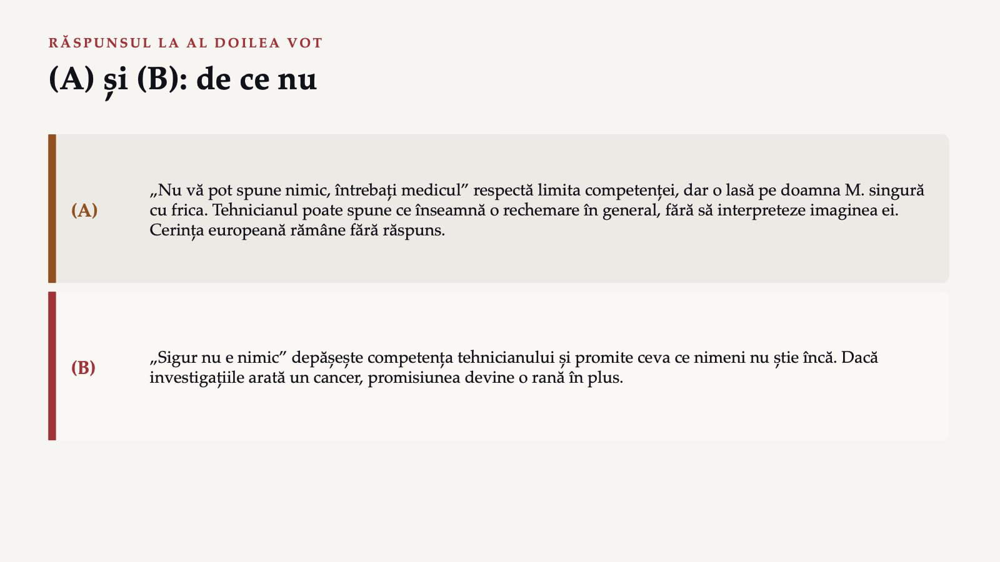
39 / 55(C) este cea corectă
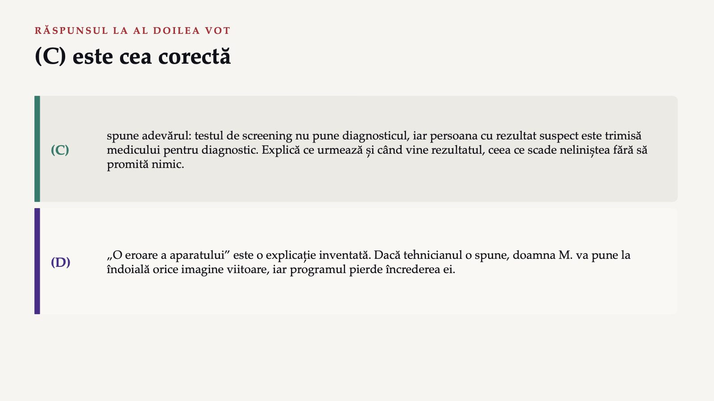
40 / 55Ce s-a schimbat
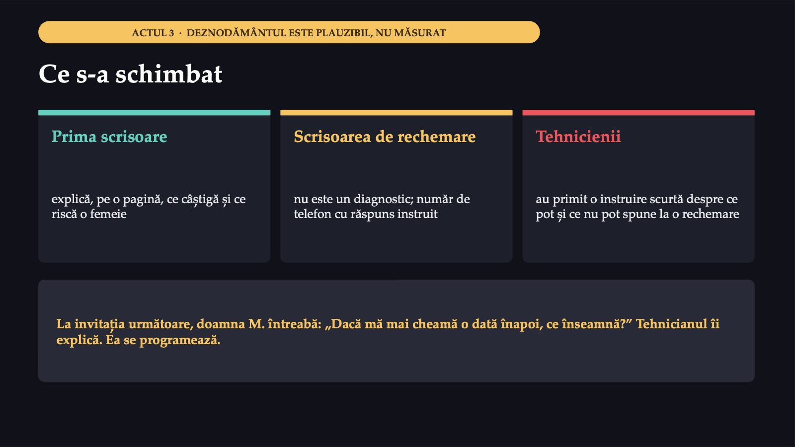
41 / 55Examenul CT cu doză mică al plămânilor
![ACTUL 3 · „LA URMĂTOAREA INVITAȚIE” Examenul CT cu doză mică al plămânilor FIȘA DISCIPLINEI Pomenește, alături de mamografie, „tomografia pulmonară cu doză mică”: examenul prin tomografie computerizată (CT) cu doză mică, propus pentru depistarea timpurie a cancerului pulmonar la persoanele cu risc ridicat. CINE ESTE PERSOANA În primul rând fumătorii și foștii fumători care au fumat mult. Ce spun dovezile scade mortalitatea prin cancer pulmonar Ce prețuri are supradiagnostic și incertitudine Ce recomandă UE evaluare și studii-pilot](diapozitive/C04/042.jpg) 42 / 55
42 / 559
![EXAMENUL CT CU DOZĂ MICĂ · CE SPUN DOVEZILE O sinteză din 2023: mortalitatea prin cancer pulmonar scade 9 studii randomizate, urmărire de până la 12,3 ani 0,86 riscul relativ al mortalității prin cancer pulmonar; interval de încredere 95%: 0,77–0,96 0,98 riscul relativ al mortalității de orice cauză (0,95–1,01): fără scădere semnificativă Riscul relativ compară grupul examinat cu cel neexaminat: 0,86 înseamnă cu aproximativ 14% mai puține decese prin cancer pulmonar. Autorii concluzionează că screeningul este eficient la persoanele cu risc ridicat.](diapozitive/C04/043.jpg) 43 / 55
43 / 5549%
 44 / 55
44 / 55Pentru plămâni, Uniunea cere evaluare, nu generalizare
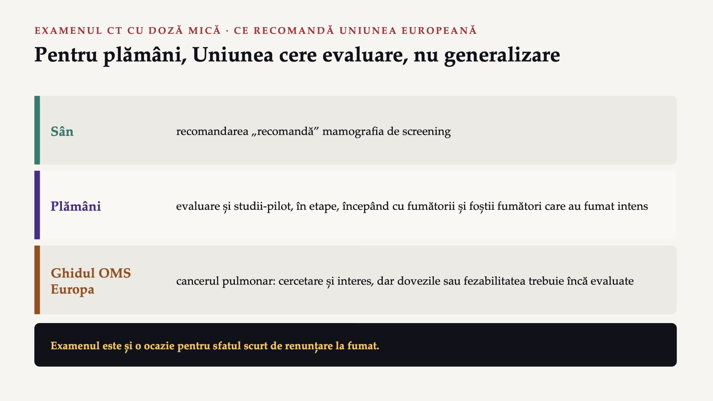
45 / 55Domnul P. vrea „un CT, ca să fie liniștit”
![VOT PE TELEFON ACTUL 3 · A TREIA DECIZIE, PE ALT PACIENT Domnul P. vrea „un CT, ca să fie liniștit” Domnul P., 62 de ani, fost fumător, fără simptome, vine fără trimitere: „Vreau un CT la plămâni, ca să fiu liniștit. Sau, dacă tot vin, faceți-mi unul pe tot corpul.” A „Vă facem acum, plătiți la casă; pe tot corpul e și mai bine.” B „Examenul CT cu doză mică este studiat în Uniunea Europeană pentru persoanele cu risc ridicat, dar orice examen cu radiații trebuie justificat de un medic. Mergeți la medicul de familie, care vă evaluează riscul și vă poate trimite; el vă poate spune dacă în județ există un program-pilot.” C „Examenul CT la plămâni nu folosește la nimic, nu vă pierdeți vremea.” D „Vă fac o radiografie pulmonară, e mai ieftină și iradiază mai puțin.” Răspundeți pe telefon, la codul afișat.](diapozitive/C04/046.jpg) 46 / 55
46 / 55(B): adevărul despre dovezi, justificarea, medicul
![RĂSPUNSUL LA A TREIA DECIZIE (B): adevărul despre dovezi, justificarea, medicul (B) corectă: spune adevărul despre dovezi și despre stadiul recomandării europene, respectă justificarea și îl trimite la medicul care poate evalua riscul (A) încalcă justificarea; examenul întregului corp ca „control” are prejudicii foarte importante și ar trebui descurajat activ sau chiar interzis (C) falsă: dovezile arată scăderea mortalității prin cancer pulmonar la persoanele cu risc ridicat (D) înlocuiește un examen nejustificat cu altul la fel de nejustificat; nu tehnicianul alege examenul](diapozitive/C04/047.jpg) 47 / 55
47 / 55Ce găsește doamna M. în România, nu în Județul B
 48 / 55
48 / 55sub 10%
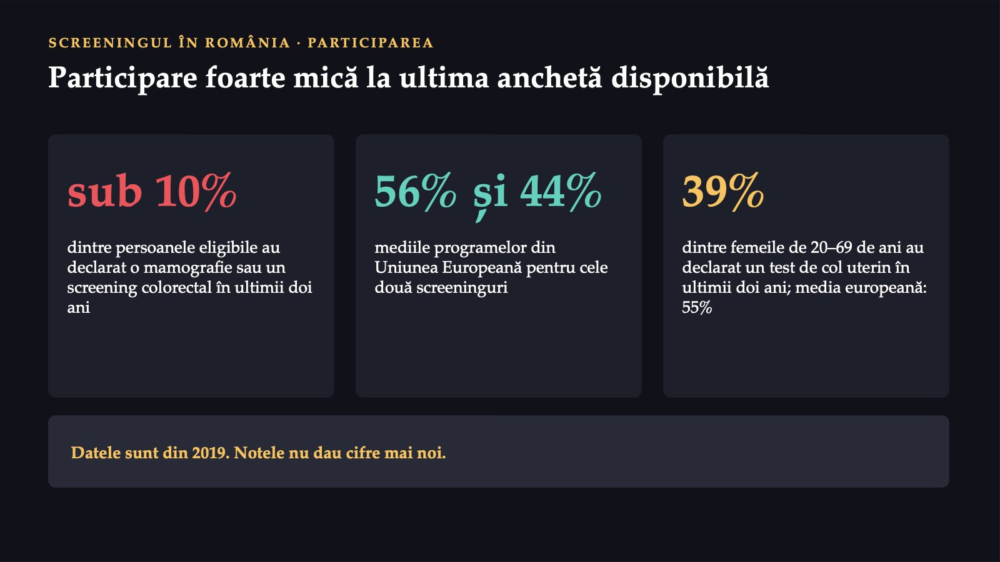
49 / 55Strategia națională de sănătate 2023–2030
![SCREENINGUL ÎN ROMÂNIA · STRATEGIA NAȚIONALĂ Strategia națională de sănătate 2023–2030 Stadiul screeningul cancerelor prevenibile este incipient și preponderent oportunist Singurul program activ plătit de Ministerul Sănătății: cancerul de col uterin, cu participare redusă Programele regionale cofinanțate din Fondul Social European, modele pentru extinderea screeningului organizat Veți lucra, probabil, într-un sistem în care screeningul organizat abia se construiește. Sursa: Strategia națională de sănătate 2023–2030, aprobată prin HG nr. 1004/2023.](diapozitive/C04/050.jpg) 50 / 55
50 / 55Șase limite, spuse deschis
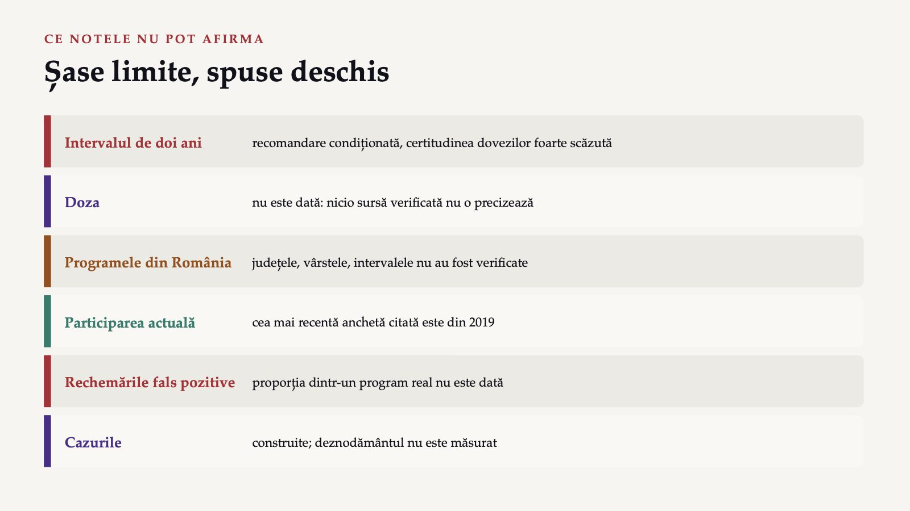
51 / 55Cinci idei din ședință
![CE REȚINEM Cinci idei din ședință Prevenția trei niveluri clasice (primară, secundară, terțiară) și cuaternara, care ferește de ce nu folosește Screeningul testarea persoanelor fără simptome; testul nu pune diagnosticul Recomandarea UE mamografia la 50–69 de ani, sugerată la 45–74; examenul CT cu doză mică: evaluare și studii-pilot Prețurile fals pozitive, fals negative, supradiagnostic; persoana le află pe înțelesul ei ca să consimtă în cunoștință de cauză Rolul vostru calitatea imaginii, doza și o comunicare corectă, fără diagnostic](diapozitive/C04/052.jpg) 52 / 55
52 / 55Cinci lucruri de făcut la următoarea persoană invitată
 53 / 55
53 / 55Zece întrebări, în echipe
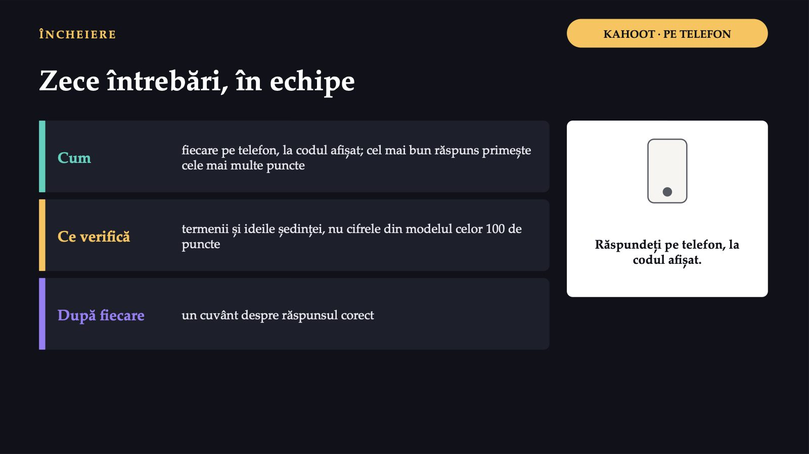
54 / 55Trei întrebări pentru final
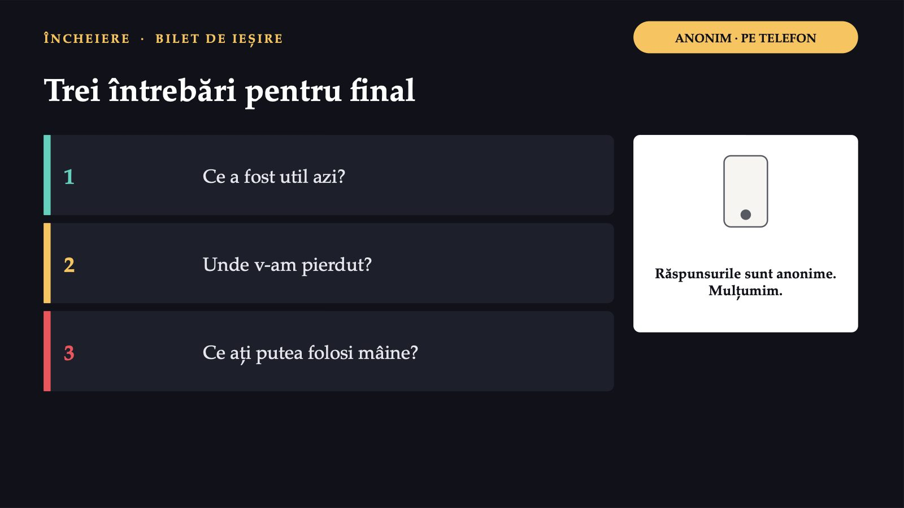
55 / 55Săgeți sau spațiu: navigare · O: vedere de ansamblu · N: notele prezentatorului · F: ecran complet · Esc: închidere